História: Os gatos foram domesticados há cerca de 9.000 anos no Oriente Médio. Eles foram valorizados por sua habilidade em caçar pragas.
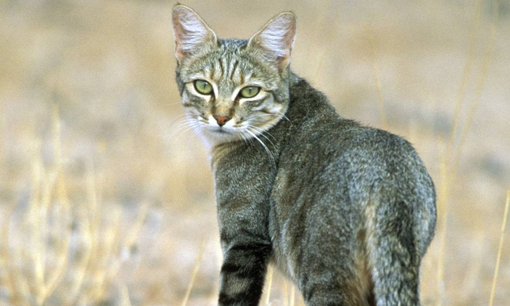
Sentidos Apurados: Os gatos têm uma audição muito sensível e podem ouvir sons em frequências mais altas do que os humanos e até mesmo os cães. Eles também têm uma visão noturna excelente, conseguindo ver em condições de luz muito baixa.
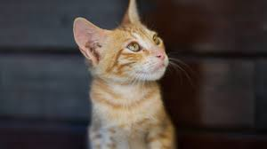
Comunicação: Os gatos têm uma variedade de sons para se comunicar, incluindo miados, ronronados, silvos, e grunhidos. Cada som pode ter significados diferentes dependendo do contexto.
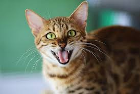
Comportamento: Gatos são animais territoriais e marcam seu território através de arranhões e esfregando seu corpo em objetos para deixar seu cheiro.
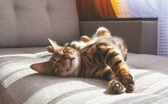
Sono: Gatos podem dormir até 16 horas por dia, com os filhotes e gatos mais velhos dormindo ainda mais.
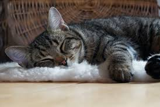
Alimentação: São carnívoros obrigatórios, o que significa que precisam de nutrientes específicos encontrados apenas na carne.
Curiosidade e Agilidade: São extremamente curiosos e ágeis, conseguindo pular até seis vezes a sua altura em um único salto.
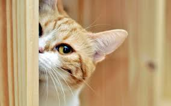
Ritual de Higiene: Passam uma grande parte do seu dia se limpando. Esse comportamento não só ajuda a mantê-los limpos, mas também regula a temperatura do corpo e melhora a circulação sanguínea.
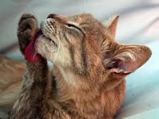
Socialização: Apesar da reputação de serem solitários, muitos gatos formam laços fortes com seus donos e outros animais de estimação.
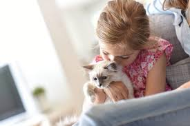
Diversidade de Raças: Existem mais de 70 raças diferentes de gatos, variando em tamanho, pelagem e características de personalidade. Abaixo, mencionaremos algumas raças mais destacadas.
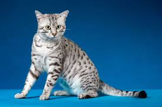
Gato de pelo curto americano
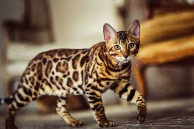
Bengal
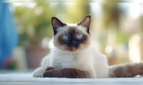
Siamês
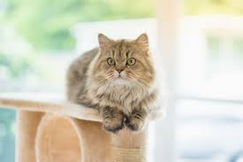
Bobtail Japonês
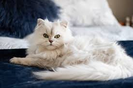
Exótico
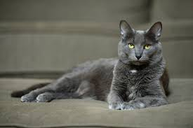
British Shorthair
Colabore com o App
Responda esta pesquisa e nos ajude a entender mais sobre esses bichinhos.
PS: Se você quiser, pode anexar uma foto do seu gato para fazer parte da nossa galeria.